Павел Ловцевич, LOVATA
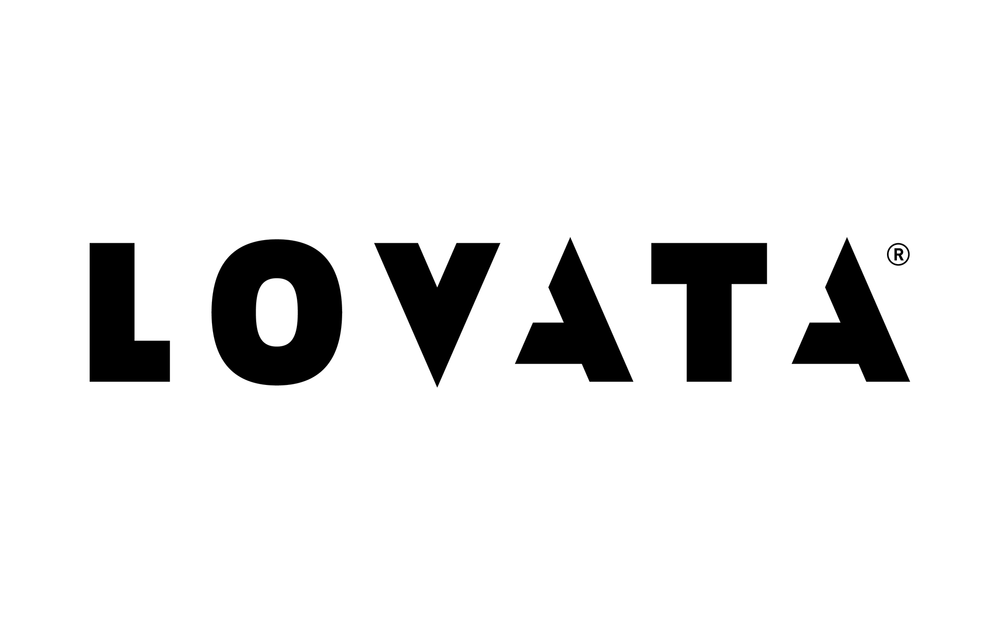
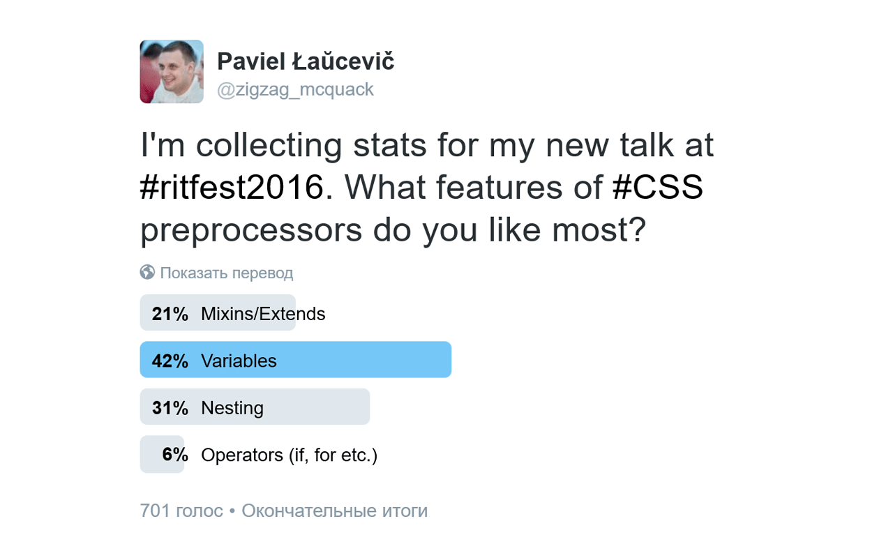
Переменные — основа современного правильно сконструированного проекта.
Условие
Тип
Свойство
--variable: value;
Функция
var(--variable);
Свойство
--variable: 💩💩💩;
Функция
var(--variable);
Свойство
--variable: @#$%&!;
Функция
background: var(--variable);
Свойство
--variable: 10px;
Функция
background: var(--variable);
Свойство
--variable: 10px;
Функция
background: trasparent;
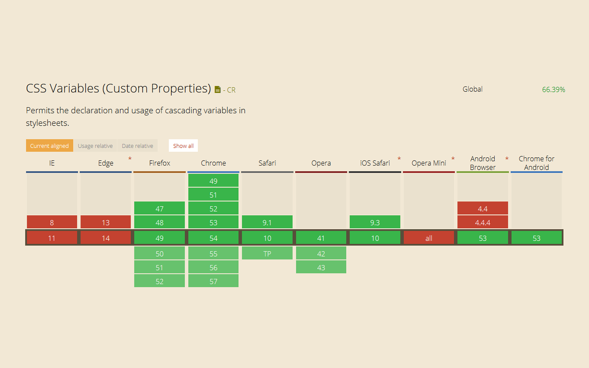
:root {--variable: value;}selector {property: value; /* fallback */property: var(--variable); /* runtime */}
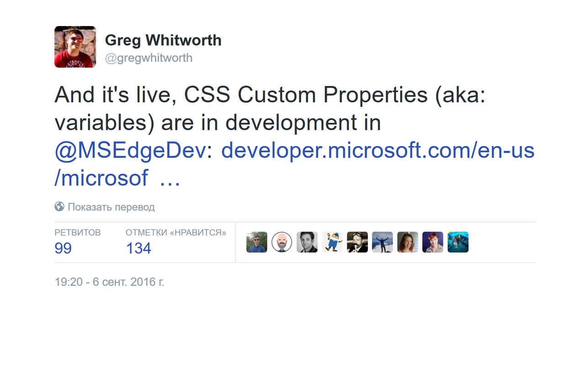
:root {--variable: value;}
Аналогично
document.documentElement
html {--variable: value;}
selector {--variable: value;}
Псевдокласс:
selector:pseudo-class {--variable: value;}
Медиа-запрос:
@media selector {--variable: value;}
Shadow DOM v1
:host {--variable: value;}
Shadow DOM v0
body /deep/ selector {property: value;}
--variable: value.Если бы мы использовали символ "$" для переменных, то не смогли бы его использовать для будущих новых более мощных сущностей, подобных на переменные.
--property
-webkit-property-moz-property-ms-property-o-property
var()
url()rgb()calc()attr()
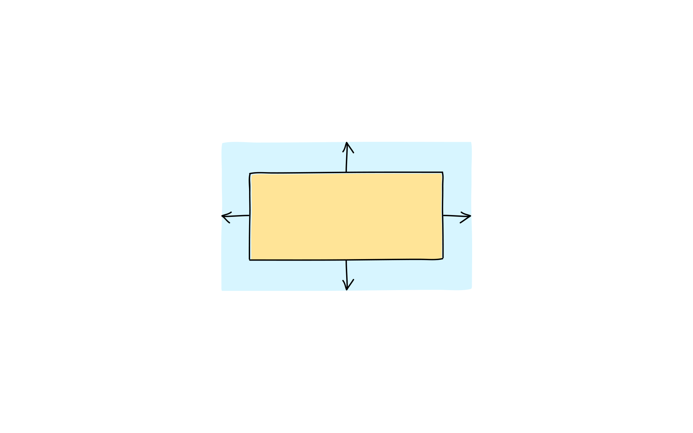
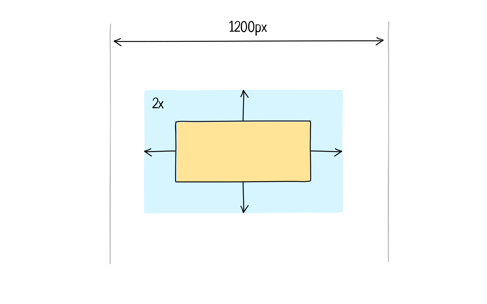
:root {--gutter: 1rem;}.сontainer {margin: var(--gutter);}@media (min-width: 1200px) {:root { --gutter: 2rem; }}
$gutter: 1rem;.сontainer {margin: $gutter;}@media (min-width: 1200px) {$gutter: 2rem;}
$gutter: 1rem;.сontainer {margin: $gutter;}@media (min-width: 1200px) {$gutter: 2rem;}
@mixin + $map: ();%foo + #{}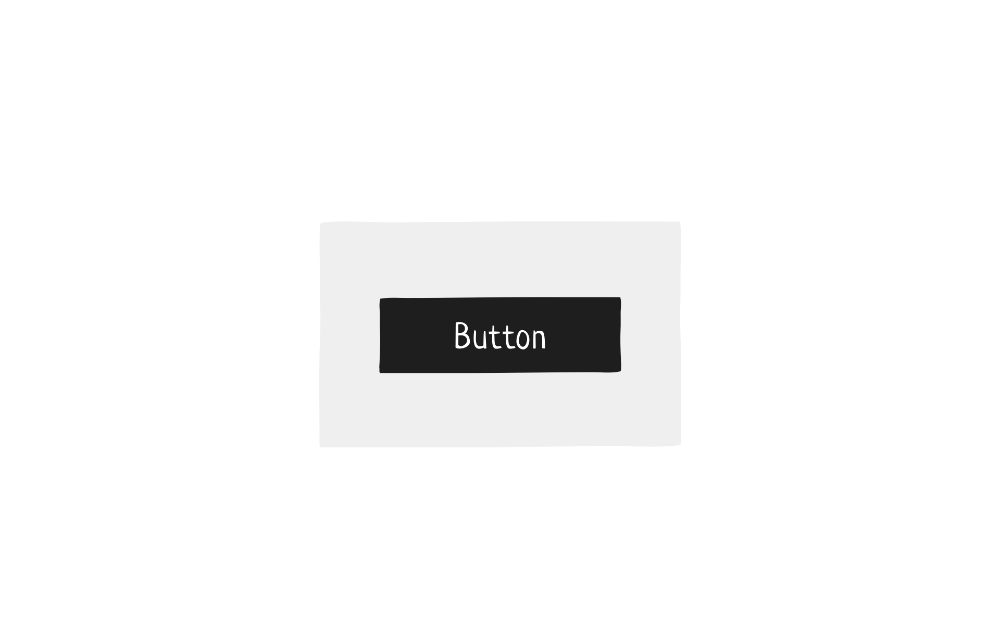
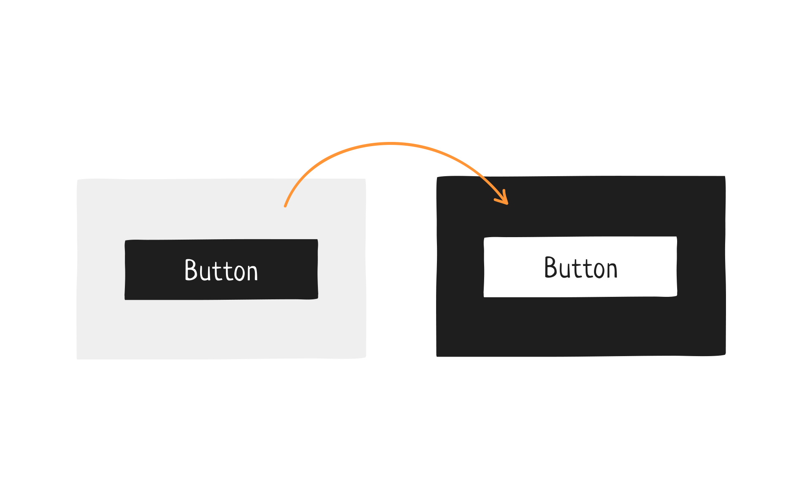
:root {--color: black;}button {background: var(--color);}.black-box {--color: white;}
:root {--color: black;}selector {background: var(--color);}selector > selector {--color: initial;}
* {--color: initial;}
:root {--color: black;}
selector {--color: black;}
Программные сущности (классы, модули, функции и т.д.) должны быть открыты для расширения, но закрыты для изменения.
Плохо
.button {background: black;}.black-box .button {background: white;}
Хорошо
.button {background: var(--color,black);}.black-box {--color: white;}
Плохо
.button {background: black;}.black-box .button {background: white;}
Хорошо
.button {background: var(--color,black);}.black-box {--color: white;}
Плохо
.button {background: black;}.black-box .button {background: white;}
Хорошо
.button {background: var(--color,black);}.black-box {--color: white;}
Плохо
.button {background: black;}.black-box .button {background: white;}
Хорошо
.button {background: var(--color,black);}.black-box {--color: white;}
Плохо
.button {background: black;}.black-box .button {background: white;}
Хорошо
.button {background: var(--color,black);}.black-box {--color: white;}
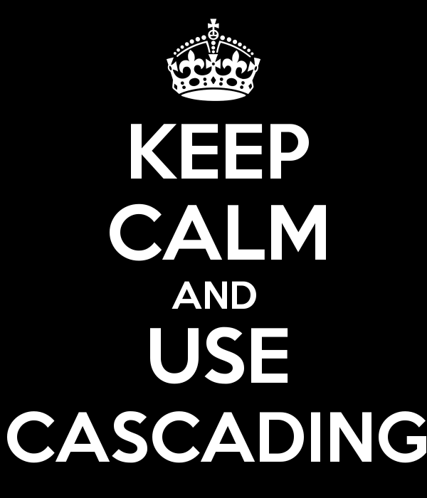
Плохо
.button {background: black;}.black-box .button {background: white;}
Хорошо
.button {background: var(--color,black);}.black-box {--color: white;}
:root {--color:;}.button {background: var(--color, black);}
:root {--color:;--color-default: black;}.button {background: var(--color, var(--color-default));}
:root {--color:;--color-default: black;}.button {background: var(--color, var(--color-default));}
:root {--color: ;--color-default: black;}.button {background: var(--color, var(--color-default));}
:root {--color: initial;--color-default: black;}.button {background: var(--color, var(--color-default));}
:root {--color: var(--color-custom, black);--color-custom: initial;}.button {background: var(--color);}
<html lang="ru">…<body><q>Чебурашка</q></body></html>
<html lang="ru">…<body><q>Чебурашка</q></body></html>
:root:lang(en) {--quotes-l: "“"; --quotes-r: "”";}q {quotes: var(--quotes-l, "«")var(--quotes-r, "»");}
:root:lang(en) {--quotes-l: "“"; --quotes-r: "”";}q {quotes: var(--quotes-l, "«")var(--quotes-r, "»");}
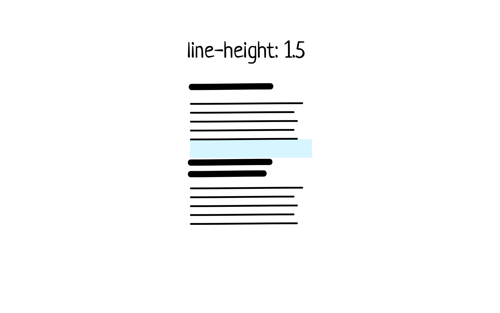
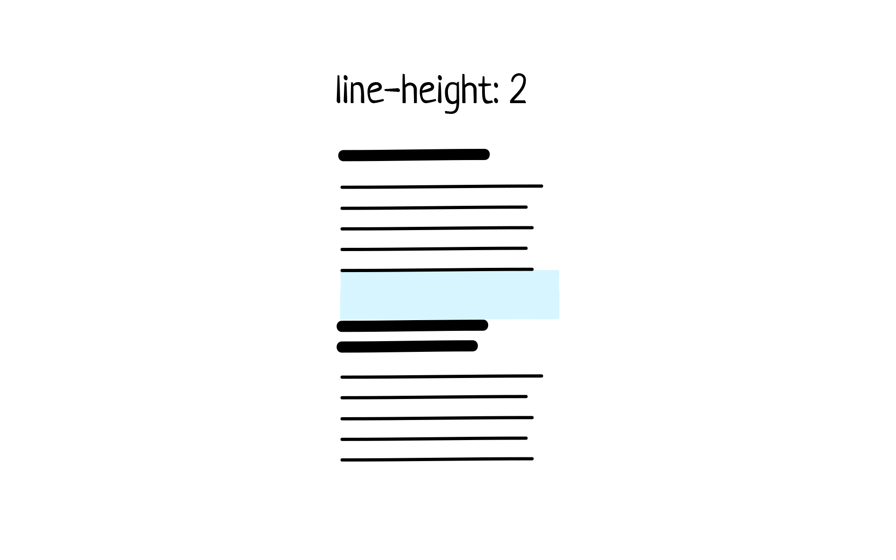
:root {--line-height: 1.5;--paragraph-margin: calc(var(--line-height) * 2);}p {margin-bottom: calc(var(--paragraph-margin, 0) * 1px);}
:root {--line-height: 1.5;--paragraph-margin: calc(var(--line-height) * 2);}p {margin-bottom: calc(var(--paragraph-margin, 0) * 1px);}
:root {--line-height: 1.5;--paragraph-margin: calc(var(--line-height) * 2);}p {margin-bottom: calc(var(--paragraph-margin, 0) * 1px);}
<svg height="100" width="100"><style>:root {--color: black;}</style><circle cx="50" cy="50" r="50" fill="var(--color)" /></svg>
CSS
:root {--color: black;}
SVG
<svg height="100" width="100"><circle cx="50" cy="50" r="50" fill="var(--color)" /></svg>
Получаем
getComputedStyle(document.documentElement).getPropertyValue('--variable');
Назначаем
element.style.setProperty('--variable', 'value');
Удаляем
element.style.removeProperty('--variable');
See the Pen css variables by Daniel David (@danield770) on CodePen.
@supports (--a: 0) {/* Progressive Enhancement */}
@supports not (--a: 0) {/* Graceful Degradation */}
if (window.CSS && window.CSS.supports &&window.CSS.supports('--a', 0)) {// сценарии с поддержкой переменных} else {// сценарии без поддержки переменных}
:rootvar(--property, fallback)@supports--property-calcinitial